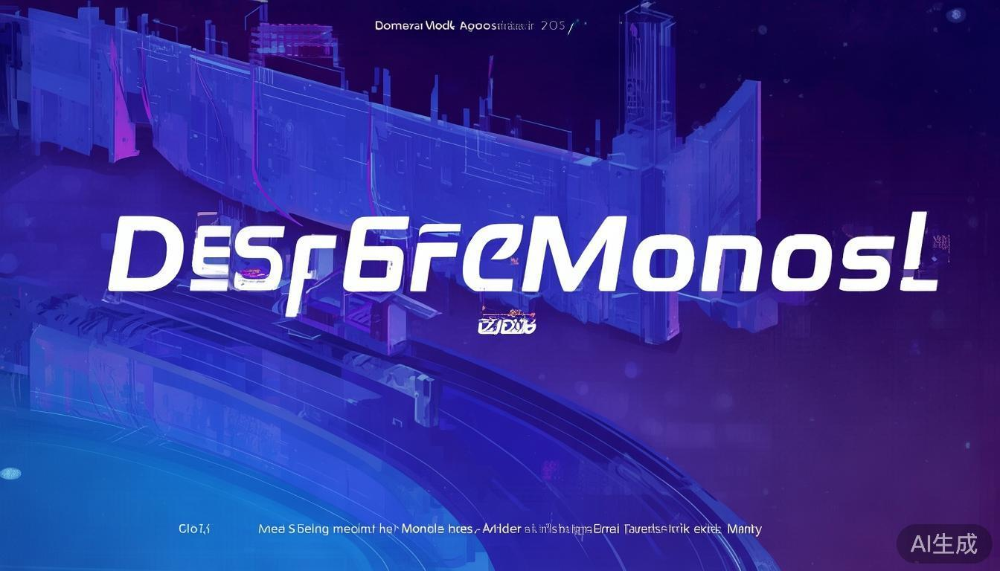

2025 是 AI 大模型格局被彻底重写的一年：OpenAI、Anthropic、Google 三强发布新一代前沿模型， 而以 DeepSeek 为首的中国力量凭借「开源 + 极致性价比」首次真正跻身全球第一梯队—— 顶级智能不再昂贵，选择权回到每一个创作者手中。
截至 2025 年底，全球大模型竞争进入「双极时代」：海外由 OpenAI、Anthropic、Google 三足鼎立， 国产则以 DeepSeek 为旗手、阿里、智谱、月之暗面、字节、百度群雄并起。最强通用能力仍属海外，但国产在 中文、推理、性价比、开源生态 四个战场实现了实质性超车。
2025 年 8 月发布 GPT-5，随后 11 月迭代至 GPT-5.1 / GPT-5.2。通用能力与 Agent 智能体综合最强， 在 SuperCLUE 中文年度测评中夺冠。默认深度推理（thinking），可调节思考强度，代码与多模态（图像/语音）领先。
闭源 · 综合最强 · Agent 旗舰2025 年 11 月发布 Claude Opus 4.5 与 Sonnet 4.5。以长上下文（1M token）、代码工程、Agentic Coding 见长， 是开发者写代码、构建智能体的首选。写作风格细腻克制，长文档处理能力一骑绝尘。
闭源 · 代码/长文 · 企业最爱2025 年 3 月发布 Gemini 2.5 Pro，年底推出 Gemini 3 Pro。拥有百万级上下文与最强的原生多模态能力（原生图像/视频/音频理解）， 深度绑定 Google 生态，是「读图读视频 + 长报告」场景的利器。
闭源 · 多模态最强 · 百万上下文2025 年 1 月 R1 引爆全球，8 月升级 V3.1 / V3.2。混合专家（MoE）架构，671B 总参数、37B 激活， 推理、代码、数学对标顶尖闭源，成本仅为其零头，是「极致性价比 + 完全开源」的代名词。
开源 · 性价比之王 · 国产旗手2025 年 4 月发布 Qwen3 全家族（含 235B-A22B MoE 旗舰），支持「思考/非思考」双模式切换， 开源权重 + 阿里云百炼生态，是国产开源生态最完整、最受开发者欢迎的底座之一。
开源 · 生态最全 · 双模式2025 年迭代至 GLM-4.6 / GLM-5，主打「Agentic」能力与自主智能体（AutoGLM）， 在中文理解、工具调用、端侧智能（手机/眼镜）落地领先，是「模型即智能体」路线的重要玩家。
开源 · 智能体 · 中文强2025 年 7 月发布 Kimi K2，以「长上下文 + 强 Agent」著称，1T 参数稀疏模型， 在代码与数学基准上对标全球最前列，同时 Kimi 对话产品以「超长文本阅读」占据用户心智。
开源 · 长上下文 · 强 Agent2025 年豆包大模型（Doubao）持续迭代，依托抖音/飞书生态用户量领先，豆包 App 长期霸榜， 主打对话体验、多模态与「深度思考」推理，是 C 端用户规模最大的国产模型之一。
闭源 · C 端第一 · 多模态阿里 通义千问（Qwen 开源线的商业化闭环）与百度 文心大模型（2025 年升级文心 5.0、开源文心 ERNIE）持续进化， 背靠搜索与云生态，在中文知识、企业落地、检索增强（RAG）场景积累深厚。
中文知识 · 企业落地
2025 年 1 月，一家中国小公司用一次开源，改写了全球 AI 的叙事逻辑——它证明：顶级智能，可以不靠天价算力堆出来。
R1 以「纯强化学习训练出思维链」的技术路径，在数学、代码、推理上对标 OpenAI o1，却把权重完全开源。 发布后 App 登顶美区 App Store 免费榜，被全球媒体称为中国 AI 的「斯普特尼克时刻」，一夜震动硅谷与华尔街。
V3 以 MoE（混合专家）架构 + 671B 总参数、37B 激活参数，配合 Multi-Head Latent Attention、FP8 混合精度等工程创新， 以远低于同行的训练成本，达到逼近 GPT-4 级的能力——打破了「大模型必须烧几百亿美元」的固有认知。
R1/V3 的 API 价格仅为主流闭源模型的十分之一量级，且完全开放权重、可本地部署。全球开发者与创作者第一次 能以「几块钱」跑出「几十美元」的效果，AI 民主化从此真正落地。
DeepSeek 的意义不止于一个模型：它证明开源路线能跑赢闭源叙事，倒逼 OpenAI、Google 等巨头降价、开源； 更重要的是——它让「国产大模型」第一次在全球能力榜上与顶尖实验室同台，并凭借「便宜一个数量级」占据生态位。
以「能力 × 价格 × 开放度」三个维度横向对比主流旗舰。价格单位为 美元 / 每百万 token 量级（2025 年底公开定价，输入/输出）， 实际以官方最新价格为准；国产模型普遍便宜一个数量级。
| 模型 | 通用能力 | 推理 | 代码 | 中文 | 价格（$ / 1M token） | 开源/闭源 | 多模态 | 上下文 |
|---|---|---|---|---|---|---|---|---|
| GPT-5.1 | ≈ $1.25 / $10 | 闭源 | 图像 / 语音 | 400K | ||||
| Claude Opus 4.5 | ≈ $5 / $25 | 闭源 | 图像 | 1M | ||||
| Gemini 3 Pro | ≈ $2 / $12 | 闭源 | 原生全模态 | 1M+ | ||||
| DeepSeek V3.1 / R1 | ≈ $0.3 / $1.5 | 开源 | 文本为主 | 128K | ||||
| Qwen3（235B-A22B） | ≈ $0.3 / $0.9 | 开源 | 图像 / 视频 | 128K | ||||
| GLM-5 | ≈ $0.3 / $0.9 | 开源 | 图像 / 视频 | 128K | ||||
| Kimi K2 | ≈ $0.4 / $1.2 | 开源 | 文本为主 | 128K | ||||
| 豆包（Doubao） | ≈ $0.1 / $0.3 | 闭源 | 图像 / 视频 / 语音 | 256K |
海外巨头（GPT-5 / Claude / Gemini）包揽综合前三，但国产在中文、推理、代码、性价比等细分领域超车； DeepSeek 稳居「开源模型」榜首，Qwen、GLM、Kimi 紧随其后。
国内权威中文基准：GPT-5.1 综合夺冠，DeepSeek 为开源模型第一， 在中文理解与推理上国产模型已与海外顶配「贴身肉搏」，性价比维度大幅领先。
面向智能体的权威评测中，GPT-5 与 Claude 领跑，DeepSeek 等开源模型表现亮眼—— 「全球前五已有两款中国造，且便宜一个数量级」成为 2025 年最常被引用的判断。
没有「最好」的模型，只有「最合适」的模型。选型公式：任务匹配 × 单次成本 × 隐私与可控性。
写公众号、小红书、知乎、小说、脚本，中文语感和成本是首要考量。DeepSeek V3.1 与 R1 的中文写作质量顶配、价格白菜， 豆包 C 端体验顺滑、多模态辅助出图，是个人 IP 量产内容的黄金组合。
性价比首选复杂工程、Agentic Coding、长代码库重构首选 Claude（Opus/Sonnet 4.5）；预算有限、需要海量生成时用 DeepSeek / Kimi K2 做主力， Claude 做关键模块精修，二者搭配能省 80% 成本。
工程能力优先要理解图片、视频、音频并产出结构化内容（如视频拆解、海报分析、长报告），Gemini 原生多模态 + 百万上下文最强； GPT-5 则胜在「多模态 + Agent 工具调用」的综合场景。
多模态首选需要「想清楚」的活——选题分析、剧情逻辑校验、商业策划、数学推导，R1 的思维链推理几乎免费，效果对齐 OpenAI 同档； 追求极限 Agent 能力再上 GPT-5。
推理质价比一篇 2000 字文章约消耗 6~8K token。用 GPT-5 约 ¥0.5，用 DeepSeek 约 ¥0.05——差距 10 倍。 高频产出时，选对模型一个月能省出几百上千元。
用贵模型打磨模板、定风格、审关键稿，用国产模型跑批量初稿与改写。80% 的活儿交给便宜模型，20% 的精品交给顶配。
把「设定文档 / 风格参考 / 产品知识库」固定放在上下文里命中缓存，DeepSeek 缓存命中价格再降一个量级， 长文档场景直接选 128K+ 上下文模型，省去反复拼接的隐性成本。
适合：隐私敏感数据、稳定可控、长期高频、有硬件/技术能力的创作者与团队。
路径：Ollama / vLLM 拉取 DeepSeek、Qwen3 蒸馏版（7B~70B）跑本地，或租 GPU 部署满血版；
数据不出本机，边际成本趋近于零，但需承担硬件与维护成本。
适合：快速上手、弹性用量、需要最新最强模型的创作者。
路径：DeepSeek 官方 API（兼容 OpenAI 格式）、阿里云百炼（Qwen3）、硅基流动等平台统一接入多家开源模型；
零维护、按量付费，是「个人 IP 起步」的最优解。